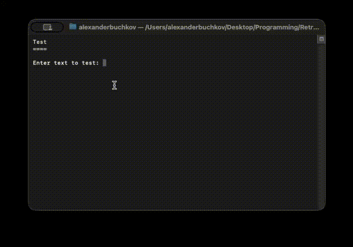

Retr0GUI is a simple, powerful C# library for creating interactive console applications with menus, switches, input fields, tables, and more.
Navigate options with arrow keys and select with ease
Create interactive yes/no toggles with left/right navigation
Support for text, passwords, and required field validation
Display and interact with tabular data in the console
Edit object properties with automatic UI generation
Full control over colors, formatting, and appearance

Interactive console UI example with menus and controls
Install the package from GitHub using the NuGet CLI:
dotnet add package Retr0A.Retr0GUI --source https://nuget.pkg.github.com/Retr0Aa/index.jsonOr add to your .csproj file:
<ItemGroup>
<PackageReference Include="Retr0A.Retr0GUI" Version="*" />
</ItemGroup>using Retr0GUI;
// Create a vertical menu
string[] options = { "Option 1", "Option 2", "Option 3" };
int selected = GUIControls.VerticalMenu(
"Choose an option",
options,
new ControlStyle()
{
TitleColor = ConsoleColor.Cyan,
Underline = true
}
);
// Create a toggle switch
bool result = GUIControls.HorizontalSwitch(
"Enable feature?",
"Yes",
"No",
new ControlStyle()
);
// Create an input field
string name = GUIControls.InputField(
"Enter your name",
"Required field",
new ControlStyle()
);To authenticate with GitHub Packages, create a nuget.config file in your project root:
<?xml version="1.0" encoding="utf-8"?>
<configuration>
<packageSources>
<add key="github" value="https://nuget.pkg.github.com/Retr0Aa/index.json" />
</packageSources>
<packageSourceCredentials>
<github>
<add key="Username" value="USERNAME" />
<add key="ClearTextPassword" value="GITHUB_TOKEN" />
</github>
</packageSourceCredentials>
</configuration>Generate a GitHub Personal Access Token with read:packages scope in your GitHub settings.
Start using Retr0GUI today and create interactive console applications with ease.